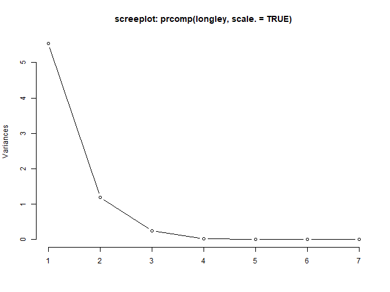
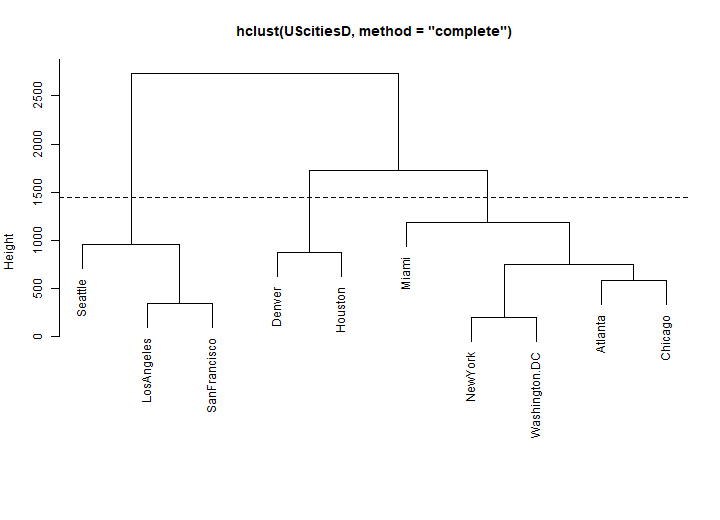

[13주차] R 코드와 출력의 해석
빅데이터개론
13주차
R 코드와 출력의 해석
2027학년도 「빅데이터개론」의 준비 중인 교재입니다. 편집 상태를 검토하기 위해 미리 공개한 것으로, 수업 전에 내용과 순서가 바뀔 수 있습니다.
학사 15주차 · 교재 13 · 4부 R 정리 · ADsP 3과목 데이터분석 (R 코드와 R 출력이 나오는 문항)
4장부터 12장까지는 분석을 파이썬으로 실행하고, 장의 끝 「R 출력 해석」 절에서 같은 분석의 R 출력을 읽었다. 이 장은 장마다 흩어져 있던 그 절들을 출력의 유형별로 다시 묶는다. 새로운 통계 내용은 없다. 앞 장에서 배운 값이 R 출력의 어느 자리에 있는지를 한곳에 정리한다. 집단의 평균을 견주는 분산분석(aov())의 출력만은 이 장에서 처음 다룬다.
ADsP 시험은 R 코드를 쓰게 하지 않는다. 짧은 코드나 출력을 보여 주고 그 뜻을 묻는다. 출력 해석 문항 가운데 자주 나오는 것은 회귀 분석, 기술 통계, 주성분 분석의 출력이다. 절의 순서와 분량은 이 순서를 따랐다. 자료와 모형은 앞 장에서 쓰지 않은 것으로 바꾸었다. 숫자를 기억해서가 아니라 자리를 알아서 답하는지를 확인하기 위해서다. 다음 주는 기말시험이다.
학습 목표
- R 코드에서 파이썬과 다르게 읽히는 곳(1부터 세는 인덱스,
<-, 팩터,NA,$)을 구분하고 실행 결과를 말한다. - 데이터 마트 패키지
reshape,sqldf,plyr,data.table의 역할을 구분한다. - 회귀 분석, 기술 통계와 검정, 주성분 분석, 분류와 군집의 R 출력에서 문항이 묻는 값의 자리를 찾아 해석한다.
- 출력 하나에 질문 여럿이 붙은 문항 묶음을 정해진 순서로 풀고, 답의 근거가 된 출력의 자리를 적는다.
준비 사항
| 항목 | 내용 |
|---|---|
| 실습 노트북 | 없다. 이 장에는 실행하는 코드가 없다. 따라 하기는 출력을 읽고 표를 채우는 활동이다 |
| 자료 | R에 들어 있는 내장 자료다. 출력만 읽으므로 파일을 받지 않는다 |
| 앞 장과의 연계 | 4~12장의 「R 출력 해석」 절과 부록 B(파이썬과 R의 대응표)를 전제로 한다 |
| 실습 환경 | R을 설치하지 않는다. 이 장의 출력은 R 4.6.2에서 실제로 실행하여 얻은 것이다 |
이 장의 본문에서 쓰는 자료는 다음과 같다.
| 자료 | 내용 | 쓰는 절 |
|---|---|---|
faithful |
간헐천의 분출 272회. 분출이 이어진 시간(eruptions, 분)과 분출 사이의 대기 시간(waiting, 분) |
3.1 |
stackloss |
화학 공장의 21일 운전 기록. 공기 유량(Air.Flow), 냉각수 온도(Water.Temp), 산 농도(Acid.Conc.), 암모니아 손실(stack.loss) |
3.2, 3.3, 4.6 |
warpbreaks |
직물을 짠 54회의 기록. 날실이 끊어진 횟수(breaks), 실의 종류(wool: A, B), 장력(tension: L, M, H) |
4.1, 4.3 |
chickwts |
병아리 71마리. 사료의 종류(feed, 6종)와 6주 뒤의 몸무게(weight, g) |
4.2, 4.5 |
immer |
보리 시험구 30개. 같은 시험구의 1931년 수확량(Y1)과 1932년 수확량(Y2) |
4.4 |
longley |
미국의 16년치(1947~1962년) 경제 지표 일곱 개. 국민총생산(GNP), 실업자 수(Unemployed), 군인 수(Armed.Forces), 취업자 수(Employed) 등 |
5 |
mtcars |
자동차 32종. 엔진의 형태(vs: 0 V형, 1 직렬형)와 연비(mpg)를 쓴다 |
6.1, 6.2 |
UScitiesD |
미국 10개 도시 사이의 거리를 담은 거리 행렬 | 6.3 |
WWWusage |
어느 서버에 접속한 사용자 수를 1분마다 100번 잰 시계열 | 7.1 |
shuttle |
우주 왕복선의 착륙 조건 256가지. 자동 착륙 장치를 쓰는지(use: auto, noauto), 시야(vis), 오차(error), 안정성(stability) 등 |
7.2 |
1. R 코드 독해를 위한 최소 문법
1학기 「파이썬 기초」에서 리스트, 인덱스, 반복문, DataFrame을 배웠으므로 R의 코드도 대부분은 읽힌다. 이 절은 파이썬과 다르게 읽히는 다섯 곳(1부터 세는 인덱스, <-, 팩터, NA, $)만 다룬다. 4장 「표 데이터와 데이터 마트」의 「R 출력 해석」에서 본 벡터와 데이터 프레임의 출력이 바탕이다.
아래의 출력에서 >로 시작하는 줄은 입력한 코드이고, 그 아래의 줄은 R이 내놓은 결과다. 결과의 앞에 붙는 [1]은 그 줄의 첫 값이 몇 번째 값인지를 알리는 표시이며 값이 아니다.
1.1 대입과 벡터
> x <- c(10, 20, 30, 40, 50)
> x
[1] 10 20 30 40 50
> length(x)
[1] 5
> 1:5
[1] 1 2 3 4 5
> seq(1, 10, by = 3)
[1] 1 4 7 10<-는 대입이다. 오른쪽의 값을 왼쪽의 이름에 넣는다. 파이썬의=에 해당한다. R에서도=로 대입할 수 있으나, 시험의 코드는 대부분<-로 쓴다.c()는 값을 묶어 벡터를 만든다. 벡터는 같은 자료형의 값을 한 줄로 늘어놓은 것이다. 파이썬의 리스트와 달리 자료형을 섞을 수 없다.1:5는 1부터 5까지의 정수다. 끝의 5를 포함한다. 파이썬의range(1, 5)가 5를 포함하지 않는 것과 다르다.
1.2 1부터 세는 인덱스
> x[1]
[1] 10
> x[2:4]
[1] 20 30 40
> x[-1]
[1] 20 30 40 50
> x[0]
numeric(0)
> x[6]
[1] NA
> x > 25
[1] FALSE FALSE TRUE TRUE TRUE
> x[x > 25]
[1] 30 40 50R의 인덱스는 1부터 센다. x[1]이 첫째 원소다. 음수 인덱스는 “그 자리를 뺀 나머지”이므로 x[-1]은 마지막 원소가 아니라 첫째 원소를 뺀 나머지다. x[0]은 오류가 아니라 빈 벡터(numeric(0))를 내고, 길이를 넘는 x[6]은 오류 대신 NA를 낸다. x[x > 25]는 조건이 TRUE인 자리의 값만 고른다. pandas에서 조건으로 행을 고르는 것과 같다.
| 하는 일 | R | 파이썬 |
|---|---|---|
| 대입 | x <- 3 |
x = 3 |
| 첫째 원소 | x[1] |
x[0] |
| 둘째부터 넷째까지 | x[2:4] (끝을 포함한다) |
x[1:4] (끝을 포함하지 않는다) |
| 음수 인덱스 | x[-1]은 첫째 원소를 뺀 나머지 |
x[-1]은 마지막 원소 |
| 범위를 넘는 인덱스 | x[6]은 NA |
IndexError |
| 원소의 수 | length(x) |
len(x) |
| 논리값 | TRUE, FALSE |
True, False |
| 결측값 | NA |
pandas의 NaN |
| 표의 열 고르기 | df$score |
df["score"] |
1.3 자료형과 팩터
| 자료형 | 뜻 | 만드는 함수 | 파이썬에서 가까운 것 |
|---|---|---|---|
| 벡터 | 같은 자료형의 값을 한 줄로 늘어놓은 것 | c() |
pandas의 Series |
| 팩터 | 범주형 자료. 값이 가질 수 있는 범주를 수준(Levels)으로 가진다 |
factor() |
pandas의 category 자료형 |
| 행렬 | 같은 자료형의 값을 행과 열로 놓은 것 | matrix() |
2차원 배열 |
| 리스트 | 자료형과 길이가 다른 값을 이름을 붙여 담은 것 | list() |
딕셔너리 |
| 데이터 프레임 | 열마다 자료형이 다를 수 있는 표. 열의 길이는 모두 같다 | data.frame() |
pandas의 DataFrame |
> c(1, "a", TRUE)
[1] "1" "a" "TRUE"
> f <- factor(c("low", "high", "mid", "low", "high"))
> f
[1] low high mid low high
Levels: high low mid
> levels(f)
[1] "high" "low" "mid"
> as.integer(f)
[1] 2 1 3 2 1
> table(f)
f
high low mid
2 2 1 - 벡터에 수와 문자를 섞어 넣으면 모두 문자로 바뀐다. 결과에 따옴표가 붙어 있으면 문자다.
- 팩터는 값을 그대로 저장하지 않고, 수준의 목록과 각 값이 몇 번째 수준인지를 저장한다. 수준은 따로 정하지 않으면 글자 순서로 놓인다.
high가 1번,low가 2번,mid가 3번이므로as.integer(f)는2 1 3 2 1이다. 4.1절의str()출력에서 팩터의 열 뒤에 붙는 수가 이 번호다. table()은 수준별 개수를 센다. pandas의value_counts()에 해당한다.
1.4 결측값 NA
> df <- data.frame(id = 1:4, score = c(90, NA, 70, 80))
> str(df)
'data.frame': 4 obs. of 2 variables:
$ id : int 1 2 3 4
$ score: num 90 NA 70 80
> y <- df$score
> is.na(y)
[1] FALSE TRUE FALSE FALSE
> sum(is.na(y))
[1] 1
> mean(y)
[1] NA
> mean(y, na.rm = TRUE)
[1] 80NA는 값이 없다는 표시다.is.na()는 값마다 결측인지를TRUE,FALSE로 알려 준다.TRUE는 1,FALSE는 0으로 계산되므로sum(is.na(y))는 결측값의 수다.- 결측값이 하나라도 있으면
mean(),sum(),sd()의 결과는NA다. pandas의mean()이 결측값을 빼고 계산하는 것과 반대다.na.rm = TRUE를 주어야 결측값을 빼고 계산한다. (90 + 70 + 80) ÷ 3 = 80이다. str()의4 obs. of 2 variables는 4행 2열이라는 뜻이다.int는 정수,num은 실수,chr은 문자,Factor는 팩터다.
1.5 $와 [행, 열]
> lst <- list(name = "A", score = c(90, 85))
> lst$score
[1] 90 85
> df[2, ]
id score
2 2 NA
> df[df$id >= 3, ]
id score
3 3 70
4 4 80
> m <- matrix(1:6, nrow = 2)
> m
[,1] [,2] [,3]
[1,] 1 3 5
[2,] 2 4 6
> m[2, 3]
[1] 6$는 리스트나 데이터 프레임에서 이름으로 하나를 고른다.lst$score는 파이썬의lst["score"],df$score는df["score"]에 해당한다. 모형의 결과에서 값을 꺼낼 때에도 쓴다(km$size).- 데이터 프레임과 행렬은
[행, 열]로 고른다. 쉼표의 앞이 행이고 뒤가 열이다. 한쪽을 비우면 전부라는 뜻이다.df[2, ]는 2행 전체이고,df[df$id >= 3, ]은id가 3 이상인 행 전체다. pandas의df.loc[조건, :]과 같은 꼴이다. matrix(1:6, nrow = 2)는 값을 열 방향으로 채운다. 첫 열이 1, 2이고 둘째 열이 3, 4다.m[2, 3]은 2행 3열의 값이다.
1.6 함수 호출과 식
m <- lm(weight ~ height, data = women) # 회귀 모형을 적합하여 m에 넣는다
summary(m) # m의 결과표를 낸다
round(cor(x), 3) # 안쪽 cor(x)를 먼저 실행하고, 그 결과를 소수 셋째 자리로 반올림한다함수이름(인수)의 꼴이다.data = women처럼이름 = 값으로 적은 인수는 파이썬의 키워드 인자와 같다. 괄호 안의=는 대입이 아니다.weight ~ height는 식이다. 물결표의 왼쪽이 종속 변수(반응 변수)이고 오른쪽이 독립 변수(설명 변수)다.y ~ a + b는 독립 변수가 둘이고,y ~ .은 나머지 열을 모두 독립 변수로 쓴다는 뜻이다.breaks ~ wool처럼 오른쪽이 팩터이면 집단을 나누는 변수다. 파이썬에는 이 꼴이 없다.- 함수가 겹쳐 있으면 안쪽부터 읽는다.
시험의 코드와 출력에 나오는 함수와, 그 출력을 처음 해석한 장은 다음과 같다.
| 함수 | 하는 일 | 다룬 장 |
|---|---|---|
head(), str(), summary() |
앞의 몇 행, 구조, 열별 요약 | 4장, 5장 |
mean(), median(), sd(), var(), quantile() |
평균, 중앙값, 표준편차, 분산, 분위수 | 5장 |
table() |
범주별 개수. 두 변수를 주면 교차표 | 4장, 11장 |
t.test() |
t-검정 | 6장 |
lm(), anova(), step(), predict() |
회귀 모형, 분산분석표, 변수 선택, 예측 | 7장 |
cor(), cor.test() |
상관행렬, 상관 계수의 검정 | 7장 |
aov() |
집단 평균을 견주는 분산분석 | 13장(이 장 4.5절) |
prcomp(), princomp(), screeplot() |
주성분 분석, 스크리 그림 | 8장 |
decompose(), acf(), arima() |
시계열의 분해, 자기상관 그림, 시계열 모형 | 9장 |
glm(family = binomial), rpart() |
로지스틱 회귀, 의사결정나무 | 10장 |
dist(), hclust(), cutree(), kmeans() |
거리, 계층적 군집, 군집 자르기, k-평균 | 12장 |
따라 하기
1.1~1.5절의 출력을 보고 표의 「R의 결과」 칸을 채운다. 「파이썬이면」 칸에는 같은 모양의 파이썬 리스트 x = [10, 20, 30, 40, 50]에서 같은 코드를 쓰면 무엇이 나오는지 적는다.
| 코드 | R의 결과 | 파이썬이면 |
|---|---|---|
x[1] |
||
x[2:4] |
||
x[-1] |
||
x[6] |
||
as.integer(f) |
(없음) | |
mean(y) |
(pandas의 mean()은 결측값을 빼고 계산한다) |
- 확인 1
x[1]이 10,x[2:4]가20 30 40의 세 값이다. 파이썬에서는x[1]이 20,x[2:4]가[30, 40]이다. - 확인 2
x[-1]이20 30 40 50이고, 파이썬의x[-1]은 50이다. - 확인 3
as.integer(f)가2 1 3 2 1이며, 수준이high low mid의 순서이기 때문이다. - 확인 4
mean(y)가NA이고,na.rm = TRUE를 주면 80이다.
2. 데이터 마트 패키지의 이름과 역할
4장 「표 데이터와 데이터 마트」에서 pandas로 한 일(고르기, 묶어 집계하기, 모양 바꾸기)을 R에서는 다음 패키지로 한다. 4장의 「R 출력 해석」에서 이 패키지들의 역할을 표로 보았다. 시험은 패키지의 이름과 역할을 짝짓게 한다. 이 교재를 쓴 환경에 패키지가 없어 출력은 싣지 않는다.
| 패키지 | 역할 | 대표 함수 | pandas에서 같은 일 |
|---|---|---|---|
reshape |
표의 모양을 바꾼다. 넓은 표를 긴 표로 녹이고(melt), 긴 표를 원하는 모양으로 다시 짠다(cast) |
melt(), cast() |
melt(), pivot_table() |
sqldf |
R의 데이터 프레임에 SQL 문을 그대로 쓴다 | sqldf("select ... from df") |
없다. SQL을 따로 쓴다 |
plyr |
자료를 나누고(split), 함수를 적용하고(apply), 결과를 합친다(combine) | ddply(), ldply(), adply() |
groupby() 뒤의 집계 |
data.table |
데이터 프레임보다 빠른 표. 키(key)를 정해 두고 빠르게 찾고 묶는다 | data.table(), setkey() |
인덱스를 정한 DataFrame |
plyr의 함수 이름은 앞의 두 글자가 입력과 출력의 자료형이다. d는 데이터 프레임, l은 리스트, a는 배열이다. ddply()는 데이터 프레임을 받아 데이터 프레임을 내고, ldply()는 리스트를 받아 데이터 프레임을 낸다.
따라 하기
다음 네 작업에 알맞은 패키지를 하나씩 적는다.
| 작업 | 패키지 |
|---|---|
(가) 고객 표에서 select 지역, avg(금액) from 고객 group by 지역을 그대로 실행한다 |
|
| (나) 월별 매출이 열로 늘어선 넓은 표를 “월, 매출”의 긴 표로 바꾼다 | |
| (다) 1억 행의 거래 표에서 고객 번호를 키로 정해 두고 빠르게 찾는다 | |
| (라) 거래 표를 지역별로 나누어 평균을 구한 뒤 하나의 데이터 프레임으로 합친다 |
- 확인 5 네 작업에
sqldf,reshape,data.table,plyr을 하나씩 짝지었다. (라)에 쓰는 함수 이름이ddply()인 까닭을 앞의 두 글자로 설명할 수 있다.
3. 출력 해석: 회귀 분석
출력 해석 문항이 가장 꾸준히 나오는 유형이다. 이 절의 출력은 7장 「상관 분석과 회귀 분석」의 「R 출력 해석」에서 읽은 summary(lm())과 anova()와 같은 꼴이다. 읽는 순서도 7장과 같다. 모형의 유의성, 계수의 유의성, 설명력의 순서다.
3.1 단순 회귀: summary(lm())
분출 사이의 대기 시간(waiting)으로 분출이 이어진 시간(eruptions)을 설명하는 모형이다.
Call:
lm(formula = eruptions ~ waiting, data = faithful)
Residuals:
Min 1Q Median 3Q Max
-1.29917 -0.37689 0.03508 0.34909 1.19329
Coefficients:
Estimate Std. Error t value Pr(>|t|)
(Intercept) -1.874016 0.160143 -11.70 <2e-16 ***
waiting 0.075628 0.002219 34.09 <2e-16 ***
---
Signif. codes: 0 '***' 0.001 '**' 0.01 '*' 0.05 '.' 0.1 ' ' 1
Residual standard error: 0.4965 on 270 degrees of freedom
Multiple R-squared: 0.8115, Adjusted R-squared: 0.8108
F-statistic: 1162 on 1 and 270 DF, p-value: < 2.2e-16읽는 순서
Call에서 식을 본다. 종속 변수는eruptions, 독립 변수는waiting하나다.- 마지막 줄의
p-value로 모형이 유의한지 본다.< 2.2e-16은 2.2 × 10의 -16제곱보다 작다는 표기다. 0.05보다 작으므로 유의하다. Coefficients의Pr(>|t|)열로 계수가 유의한지 본다.waiting의 유의 확률(p-value)은<2e-16이다.Multiple R-squared로 설명력을 본다.
| 묻는 것 | 읽는 자리 | 이 출력의 값 |
|---|---|---|
| 회귀식 | Estimate 열. (Intercept)가 절편이다 |
eruptions = -1.874016 + 0.075628 × waiting |
| 기울기의 뜻 | 독립 변수 줄의 Estimate |
대기 시간이 1분 길면 분출 시간이 평균 0.075628분 길다 |
| t 값 | Estimate ÷ Std. Error |
0.075628 ÷ 0.002219 ≈ 34.1 |
| 계수가 유의한가 | Pr(>|t|) 열과 별표 |
<2e-16, ***. 유의하다 |
| 모형이 유의한가 | 마지막 줄의 p-value |
< 2.2e-16. 유의하다 |
| 설명력 | Multiple R-squared |
0.8115 |
| 관측값의 수 | 잔차의 자유도 + 계수의 수 | 270 + 2 = 272 |
| 예측값 | 회귀식에 값을 넣는다 | 대기 시간이 80분이면 -1.874016 + 0.075628 × 80 ≈ 4.18 |
독립 변수가 하나일 때에만 성립하는 관계가 둘 있다. 결정 계수는 상관 계수의 제곱이고, F 통계량은 기울기의 t 값의 제곱이다. 이 출력에서 34.09² ≈ 1162다.
자주 틀리는 곳
(Intercept)줄의 유의 확률은 절편이 0인지를 검정한 값이다. 모형 전체의 유의 확률은 마지막 줄에 있다.- 결정 계수 0.8115를 상관 계수로 읽지 않는다. 상관 계수는 그 제곱근인 약 0.90이다.
3.2 다중 회귀: summary(lm())
암모니아 손실(stack.loss)을 공기 유량, 냉각수 온도, 산 농도로 설명하는 모형이다.
Call:
lm(formula = stack.loss ~ Air.Flow + Water.Temp + Acid.Conc.,
data = stackloss)
Residuals:
Min 1Q Median 3Q Max
-7.2377 -1.7117 -0.4551 2.3614 5.6978
Coefficients:
Estimate Std. Error t value Pr(>|t|)
(Intercept) -39.9197 11.8960 -3.356 0.00375 **
Air.Flow 0.7156 0.1349 5.307 5.8e-05 ***
Water.Temp 1.2953 0.3680 3.520 0.00263 **
Acid.Conc. -0.1521 0.1563 -0.973 0.34405
---
Signif. codes: 0 '***' 0.001 '**' 0.01 '*' 0.05 '.' 0.1 ' ' 1
Residual standard error: 3.243 on 17 degrees of freedom
Multiple R-squared: 0.9136, Adjusted R-squared: 0.8983
F-statistic: 59.9 on 3 and 17 DF, p-value: 3.016e-09읽는 순서는 단순 회귀와 같다. 달라지는 것은 계수의 줄이 여럿이라는 점과, 계수의 뜻에 “다른 독립 변수의 값이 같을 때”라는 조건이 붙는다는 점이다.
| 묻는 것 | 읽는 자리 | 이 출력의 값 |
|---|---|---|
| 독립 변수의 수 | F-statistic: ... on 3 and 17 DF의 앞 숫자 |
3 |
| 모형이 유의한가 | 마지막 줄의 p-value |
3.016e-09. 유의하다 |
| 유의한 계수 | Pr(>|t|)가 0.05보다 작은 줄 |
Air.Flow(5.8e-05), Water.Temp(0.00263) |
| 유의하지 않은 계수 | Pr(>|t|)가 0.05 이상이고 별표가 없는 줄 |
Acid.Conc.(0.34405) |
| 계수의 뜻 | Estimate |
다른 변수가 같을 때 냉각수 온도가 1 높으면 손실이 평균 1.2953 많다 |
| 설명력 | Multiple R-squared |
0.9136 |
| 변수의 수가 다른 모형과 견줄 때 | Adjusted R-squared |
0.8983 |
별표는 유의 확률의 구간을 나타낸다. Signif. codes 줄이 그 범례다.
| 표시 | *** |
** |
* |
. |
없음 |
|---|---|---|---|---|---|
| 유의 확률 | 0.001 미만 | 0.001 이상 0.01 미만 | 0.01 이상 0.05 미만 | 0.05 이상 0.1 미만 | 0.1 이상 |
자주 틀리는 곳
- 모형이 유의하다고 계수가 모두 유의한 것은 아니다. 이 출력에서 모형은 유의하지만
Acid.Conc.의 계수는 유의하지 않다. - 점(
.)은 별표가 아니다. 유의수준 0.05에서는 유의하지 않다. 5.8e-05는 0.000058이다.e-05를 보고 큰 수로 읽지 않는다.
3.3 분산분석표: anova()
3.2절의 모형에 anova()를 적용한 출력이다.
Analysis of Variance Table
Response: stack.loss
Df Sum Sq Mean Sq F value Pr(>F)
Air.Flow 1 1750.12 1750.12 166.3707 3.309e-10 ***
Water.Temp 1 130.32 130.32 12.3886 0.002629 **
Acid.Conc. 1 9.97 9.97 0.9473 0.344046
Residuals 17 178.83 10.52
---
Signif. codes: 0 '***' 0.001 '**' 0.01 '*' 0.05 '.' 0.1 ' ' 1읽는 순서: 열의 이름을 먼저 본다. 왼쪽부터 자유도(Df), 제곱합(Sum Sq), 평균 제곱(Mean Sq), F 값(F value), 유의 확률(Pr(>F))이다. Residuals 줄이 잔차다. 평균 제곱은 제곱합 ÷ 자유도이고, 변수 줄의 F 값은 그 줄의 평균 제곱 ÷ 잔차의 평균 제곱이다.
이 표의 F 값은 변수를 위에서부터 하나씩 넣었을 때의 값이다. 모형 전체의 F 통계량 59.9는 이 표에 적혀 있지 않고, 변수 줄의 제곱합을 모두 더한 회귀 제곱합으로 계산해야 나온다.
따라 하기
3.2절과 3.3절의 출력에서 값을 찾아 표를 채운다. 계산이 필요한 칸은 손으로 계산한다.
| 묻는 것 | 읽는 자리 | 값 |
|---|---|---|
| 관측값의 수 | Df의 합 + 1, 또는 잔차의 자유도 + 계수의 수 |
|
| 회귀 제곱합(SSR) | 변수 줄의 Sum Sq의 합 |
|
| 총 제곱합(SST) | 모든 줄의 Sum Sq의 합 |
|
| 결정 계수 | SSR ÷ SST | |
| 잔차 표준 오차 | 잔차 Mean Sq의 제곱근 |
|
| 모형 전체의 F 통계량 | (SSR ÷ 변수의 수) ÷ 잔차의 Mean Sq |
- 확인 6 관측값의 수가 두 방법 모두 21(1 + 1 + 1 + 17 + 1, 17 + 4)로 나왔다.
- 확인 7 SSR이 1750.12 + 130.32 + 9.97 = 1890.41, SST가 1890.41 + 178.83 = 2069.24로 나왔다.
- 확인 8 결정 계수 1890.41 ÷ 2069.24 ≈ 0.9136, 잔차 표준 오차 약 3.243, F 통계량 약 59.9가 나왔고 3.2절의 출력에 있는 값과 같다.
4. 출력 해석: 기술 통계와 검정
이 절의 출력은 5장 「결측값·이상값과 기술 통계」(summary(), 상자그림), 6장 「통계학 개론: 표본, 분포, 추정, 검정」(t.test()), 7장(cor())의 「R 출력 해석」에서 읽은 것과 같은 꼴이다. 4.5절의 aov()만은 이 장에서 처음 다룬다.
4.1 str()과 summary()
str(warpbreaks)와 summary(warpbreaks)의 출력이다.
'data.frame': 54 obs. of 3 variables:
$ breaks : num 26 30 54 25 70 52 51 26 67 18 ...
$ wool : Factor w/ 2 levels "A","B": 1 1 1 1 1 1 1 1 1 1 ...
$ tension: Factor w/ 3 levels "L","M","H": 1 1 1 1 1 1 1 1 1 2 ... breaks wool tension
Min. :10.00 A:27 L:18
1st Qu.:18.25 B:27 M:18
Median :26.00 H:18
Mean :28.15
3rd Qu.:34.00
Max. :70.00 읽는 순서: str()에서 행의 수, 열의 수, 열의 자료형을 본다. summary()는 열마다 요약을 낸다. 수치 열은 최솟값(Min.), 제1사분위수(1st Qu.), 중앙값(Median), 평균(Mean), 제3사분위수(3rd Qu.), 최댓값(Max.)의 여섯 값이고, 팩터 열은 수준별 개수다. 결측값이 있으면 맨 아래에 NA's 줄이 더 나온다.
| 묻는 것 | 읽는 자리 | 이 출력의 값 |
|---|---|---|
| 관측값과 변수의 수 | str()의 첫 줄 |
54행 3열 |
| 범주형 변수 | Factor라고 적힌 열. summary()에서는 개수가 나오는 열 |
wool(수준 2개, 27개씩), tension(수준 3개, 18개씩) |
| 평균과 중앙값 | Mean, Median |
breaks의 평균 28.15, 중앙값 26.00. 평균이 더 크므로 오른쪽 꼬리가 긴 분포로 짐작한다 |
| 사분위수 범위(IQR) | 3rd Qu. - 1st Qu. |
34.00 - 18.25 = 15.75 |
| 결측값의 수 | 맨 아래의 NA's 줄 |
줄이 없다. 결측값이 없다 |
자주 틀리는 곳
1st Qu.는 아래에서 25%의 자리이고3rd Qu.는 75%의 자리다. 자료의 절반이 그 아래에 있는 값은Median이다.str()에서 팩터 열의 뒤에 붙은1 1 1 ...은 자료의 값이 아니라 수준의 번호다(1.3절).tension의 수준은"L","M","H"의 순서로 정해져 있어M이 2번이다.
4.2 상자그림
사료의 종류별 몸무게를 boxplot(weight ~ feed, data = chickwts)로 그린 그림이다.

읽는 순서: 상자의 아랫변이 제1사분위수, 굵은 선이 중앙값, 윗변이 제3사분위수다. 수염은 상자에서 사분위수 범위의 1.5배 안에 있는 값 가운데 가장 먼 값까지 뻗는다. 수염 밖의 점이 이상값이다.
| 묻는 것 | 읽는 자리 | 이 그림의 값 |
|---|---|---|
| 중앙값이 가장 큰 집단 | 굵은 선의 높이 | casein |
| 흩어진 정도가 가장 큰 집단 | 상자의 높이(사분위수 범위) | casein |
| 이상값이 있는 집단 | 수염 밖의 점 | sunflower. 위에 둘(423, 392), 아래에 하나(226) |
자주 틀리는 곳
- 굵은 선은 평균이 아니라 중앙값이다. 상자그림에는 평균이 나오지 않는다.
- 수염의 끝은 최솟값과 최댓값이 아닐 수 있다.
sunflower의 위 수염은 341에서 끝나지만 최댓값은 이상값인 423이다.
4.3 독립 표본 t-검정: t.test()
실의 종류(wool)에 따라 날실이 끊어진 횟수(breaks)의 평균이 다른지를 t.test(breaks ~ wool, data = warpbreaks)로 검정한 출력이다.
Welch Two Sample t-test
data: breaks by wool
t = 1.6335, df = 42.006, p-value = 0.1098
alternative hypothesis: true difference in means between group A and group B is not equal to 0
95 percent confidence interval:
-1.360096 12.915652
sample estimates:
mean in group A mean in group B
31.03704 25.25926 읽는 순서: 첫 줄에서 검정의 종류를 본다. 다음으로 p-value를 유의수준과 견주고, 신뢰 구간과 표본 평균으로 방향과 크기를 확인한다.
| 묻는 것 | 읽는 자리 | 이 출력의 값 |
|---|---|---|
| 검정의 종류 | 첫 줄 | 독립인 두 표본의 t-검정. Welch는 두 집단의 분산이 같다고 가정하지 않는 방법이며 t.test()의 기본값이다 |
| 대립 가설 | alternative hypothesis |
두 집단의 평균의 차가 0이 아니다(양측 검정) |
| 검정 통계량과 자유도 | t, df |
1.6335, 42.006 |
| 판정 | p-value |
0.1098. 0.05보다 크므로 귀무 가설을 기각하지 못한다 |
| 평균 차의 95% 신뢰 구간 | 95 percent confidence interval |
-1.360에서 12.916. 0을 포함한다 |
| 집단의 표본 평균 | sample estimates |
A 31.03704, B 25.25926 |
자주 틀리는 곳
- 표본 평균의 차(약 5.8)가 있어도 유의하다고 답하지 않는다. 판정은
p-value로 한다. - 양측 검정에서 95% 신뢰 구간이 0을 포함하는 것과 유의수준 0.05에서 귀무 가설을 기각하지 못하는 것은 같은 말이다.
- 웰치 검정의 자유도는 소수로 나온다. 잘못된 출력이 아니다.
4.4 대응 표본 t-검정: t.test(paired = TRUE)
같은 시험구 30개의 1931년 수확량(Y1)과 1932년 수확량(Y2)을 t.test(immer$Y1, immer$Y2, paired = TRUE)로 견준 출력이다. 같은 대상을 두 번 잰 자료이므로 paired = TRUE를 주었다.
Paired t-test
data: immer$Y1 and immer$Y2
t = 3.324, df = 29, p-value = 0.002413
alternative hypothesis: true mean difference is not equal to 0
95 percent confidence interval:
6.121954 25.704713
sample estimates:
mean difference
15.91333 읽는 순서는 4.3절과 같다. 첫 줄이 Paired t-test로 바뀌고, 추정값이 집단별 평균 둘이 아니라 차이의 평균 하나로 나온다. 차이는 data: 줄에 앞에 적은 것에서 뒤에 적은 것을 뺀 값이다. 대응 표본의 자유도는 쌍의 수에서 1을 뺀 값이다.
4.5 집단 평균의 분산분석: summary(aov())
aov()는 집단을 나누는 변수(팩터)에 따라 종속 변수의 평균이 다른지를 검정하는 분산분석이다. 앞 장들에서는 회귀 모형의 분산분석표(7장)만 보았고, 집단의 평균을 견주는 분산분석의 출력은 이 장에서 처음 본다. 두 집단의 평균을 견주는 t-검정을 셋 이상의 집단으로 넓힌 것이다. 표의 꼴과 계산은 3.3절의 분산분석표와 같다.
사료 여섯 종의 평균 몸무게가 모두 같은지를 summary(aov(weight ~ feed, data = chickwts))로 검정한 출력이다. 귀무 가설은 “모든 집단의 평균이 같다”이다.
Df Sum Sq Mean Sq F value Pr(>F)
feed 5 231129 46226 15.37 5.94e-10 ***
Residuals 65 195556 3009
---
Signif. codes: 0 '***' 0.001 '**' 0.01 '*' 0.05 '.' 0.1 ' ' 1읽는 순서: 첫 줄(feed)이 집단 사이의 변동이고 Residuals 줄이 집단 안의 변동이다. Pr(>F)로 판정한다.
| 묻는 것 | 읽는 자리 | 이 출력의 값 |
|---|---|---|
| 집단의 수 | 첫 줄의 Df + 1 |
5 + 1 = 6 |
| 관측값의 수 | Df의 합 + 1 |
5 + 65 + 1 = 71 |
| 평균 제곱 | Sum Sq ÷ Df |
231129 ÷ 5 ≈ 46226, 195556 ÷ 65 ≈ 3009 |
| F 값 | 첫 줄의 Mean Sq ÷ 잔차의 Mean Sq |
46226 ÷ 3009 ≈ 15.37 |
| 판정 | Pr(>F) |
5.94e-10. 귀무 가설을 기각한다 |
자주 틀리는 곳
- 귀무 가설을 기각했다는 것은 적어도 한 집단의 평균이 다르다는 뜻이다. 모든 집단의 평균이 서로 다르다는 뜻이 아니다. 어느 집단이 다른지는 이 표에 없다.
- 첫 줄의
Df는 집단의 수가 아니라 집단의 수에서 1을 뺀 값이다.
4.6 상관행렬: cor()
3.2절의 stackloss에 round(cor(stackloss), 3)을 적용한 출력이다.
Air.Flow Water.Temp Acid.Conc. stack.loss
Air.Flow 1.000 0.782 0.500 0.920
Water.Temp 0.782 1.000 0.391 0.876
Acid.Conc. 0.500 0.391 1.000 0.400
stack.loss 0.920 0.876 0.400 1.000읽는 순서: 대각선은 모두 1이고 위와 아래가 대칭이므로 한쪽 삼각형만 읽는다. 부호로 방향을, 절댓값으로 선형 관계의 강도를 본다. 대각선의 1은 자기 자신과의 상관이며, 상관 계수가 크다는 것으로 인과를 말하지 않는다.
따라 하기
4.4절과 4.6절의 출력에서 값을 찾아 표를 채운다.
| 출력 | 묻는 것 | 읽는 자리 | 값 |
|---|---|---|---|
| 4.4 | 쌍의 수 | df + 1 |
|
| 4.4 | 유의수준 0.05에서의 판정 | p-value |
|
| 4.4 | 차이의 평균과 그 방향 | mean difference와 data: 줄 |
|
| 4.4 | 차이의 95% 신뢰 구간이 0을 포함하는가 | 95 percent confidence interval |
|
| 4.6 | stack.loss와 선형 관계가 가장 강한 변수 |
stack.loss 줄에서 대각선을 뺀 가장 큰 절댓값 |
|
| 4.6 | 선형 관계가 가장 약한 쌍 | 절댓값이 가장 작은 칸 | |
| 4.6 | 독립 변수끼리 상관이 가장 강한 쌍 | 독립 변수 사이의 칸 |
- 확인 9 쌍의 수가 30이고, 유의 확률 0.002413이 0.05보다 작아 귀무 가설을 기각한다. 신뢰 구간 6.121954에서 25.704713은 0을 포함하지 않는다.
- 확인 10 차이의 평균 15.91333은
Y1에서Y2를 뺀 값이며, 1931년의 수확량이 평균 15.91 많다는 뜻이다. - 확인 11
stack.loss와 가장 강한 변수는Air.Flow(0.920), 가장 약한 쌍은Water.Temp와Acid.Conc.(0.391), 독립 변수끼리 가장 강한 쌍은Air.Flow와Water.Temp(0.782)다. 마지막 쌍은 7장에서 다중공선성을 살핀 것과 같은 종류의 관계다.
5. 출력 해석: 주성분 분석
이 절의 출력은 8장 「다차원 척도법과 주성분 분석」의 「R 출력 해석」에서 읽은 summary(prcomp()), 적재값, screeplot()과 같은 꼴이다.
p <- prcomp(longley, scale. = TRUE) # 일곱 변수를 표준화하여 주성분 분석을 한다
summary(p) # 중요도 표
round(p$rotation[, 1:2], 3) # 적재값 가운데 앞의 두 열
screeplot(p, type = "lines") # 스크리 그림Importance of components:
PC1 PC2 PC3 PC4 PC5 PC6 PC7
Standard deviation 2.3522 1.0897 0.50221 0.12344 0.10313 0.03206 0.01608
Proportion of Variance 0.7904 0.1696 0.03603 0.00218 0.00152 0.00015 0.00004
Cumulative Proportion 0.7904 0.9601 0.99612 0.99830 0.99982 0.99996 1.00000읽는 순서: 열이 주성분이고 줄이 셋이다. 첫 줄은 주성분의 표준편차, 둘째 줄은 그 주성분 하나의 기여율(분산 설명 비율), 셋째 줄은 첫 주성분부터 더한 누적 기여율이다. 주성분의 수를 묻는 문항은 셋째 줄에서 답한다.
| 묻는 것 | 읽는 자리 | 이 출력의 값 |
|---|---|---|
| 주성분의 수 | 열의 수. 변수의 수와 같다 | 7 |
| 제1주성분의 기여율 | Proportion of Variance의 PC1 |
0.7904 |
| 제2주성분까지의 누적 기여율 | Cumulative Proportion의 PC2 |
0.9601 |
| 누적 기여율 80%를 넘기는 주성분의 수 | Cumulative Proportion이 처음 0.8을 넘는 열 |
PC2. 2개 |
| 주성분의 분산(고윳값) | Standard deviation의 제곱 |
2.3522² ≈ 5.53 |
| 기여율의 계산 | 분산 ÷ 분산의 합. 표준화했으면 합은 변수의 수다 | 5.53 ÷ 7 ≈ 0.79 |

스크리 그림은 가로축이 주성분의 번호이고 세로축이 주성분의 분산이다. 8장과 같이, 선이 급하게 내려가다가 완만해지기 시작하는 곳을 찾아 그 바로 앞의 주성분까지 남긴다. 이 그림에서는 3번부터 선이 완만해지므로 그 앞인 2번까지, 곧 2개를 남긴다. 누적 기여율로 정한 수와 같다.
PC1 PC2
GNP.deflator 0.423 0.033
GNP 0.423 0.030
Unemployed 0.279 -0.617
Armed.Forces 0.189 0.777
Population 0.422 -0.069
Year 0.425 -0.024
Employed 0.413 0.093적재값(rotation)은 열로 읽는다. 한 열이 주성분 하나를 만드는 식의 계수다. 절댓값이 큰 변수가 그 주성분의 뜻을 정한다.
자주 틀리는 곳
- 둘째 줄과 셋째 줄을 바꾸어 읽지 않는다.
PC2의 기여율은 0.1696이고, 0.9601은PC1과PC2를 더한 값이다. 셋째 줄의 마지막 값은 언제나 1이다. - 첫 줄은 분산이 아니라 표준편차다. 분산을 물으면 제곱한다.
scale. = TRUE는 변수마다 분산이 1이 되도록 표준화한다는 설정이다. 단위가 다른 변수를 함께 쓸 때 준다.
따라 하기
중요도 표와 적재값에서 값을 찾아 표를 채운다.
| 묻는 것 | 읽는 자리 | 값 |
|---|---|---|
PC2의 분산 |
PC2의 Standard deviation의 제곱 |
|
| 일곱 주성분의 분산의 합 | 표준화한 변수의 수 | |
PC1에서 적재값이 가장 작은 변수 |
PC1 열 |
|
PC2에서 절댓값이 가장 큰 적재값의 변수와 부호 |
PC2 열 |
|
| 누적 기여율 99%를 넘기는 주성분의 수 | Cumulative Proportion |
- 확인 12
PC2의 분산이 1.0897² ≈ 1.19로 나왔고, 일곱 분산의 합이 7이다. - 확인 13
PC1에서 가장 작은 적재값은Armed.Forces(0.189)이고,PC2에서 절댓값이 가장 큰 것은Armed.Forces(0.777)이며 그다음이Unemployed(-0.617)다.PC1은 다섯 변수가 0.41~0.43으로 고르게 들어간 경제 규모의 축이고,PC2는 군인 수와 실업자 수가 반대 부호로 들어간 축이다. - 확인 14 누적 기여율 99%를 처음 넘는 열이
PC3(0.99612)이므로 3개다.
6. 출력 해석: 분류와 군집
이 절의 출력은 10장 「분류 분석 (1): 데이터 분할, 로지스틱 회귀, 의사결정나무」의 summary(glm()), 11장 「분류 분석 (2): 앙상블, 인공신경망, 모형 평가」의 table() 오분류표, 12장 「군집 분석과 연관 분석」의 덴드로그램과 cutree()를 다시 읽는다.
6.1 로지스틱 회귀의 계수: summary(glm())
연비(mpg)로 엔진이 직렬형일 확률(vs = 1)을 설명하는 모형이다.
Call:
glm(formula = vs ~ mpg, family = binomial, data = mtcars)
Coefficients:
Estimate Std. Error z value Pr(>|z|)
(Intercept) -8.8331 3.1623 -2.793 0.00522 **
mpg 0.4304 0.1584 2.717 0.00659 **
---
Signif. codes: 0 '***' 0.001 '**' 0.01 '*' 0.05 '.' 0.1 ' ' 1
(Dispersion parameter for binomial family taken to be 1)
Null deviance: 43.860 on 31 degrees of freedom
Residual deviance: 25.533 on 30 degrees of freedom
AIC: 29.533
Number of Fisher Scoring iterations: 6다음은 계수에 지수 함수를 취한 round(exp(coef(g)), 3)의 출력이다. (Intercept)의 0.000은 반올림하여 0으로 보이는 것이다.
(Intercept) mpg
0.000 1.538 읽는 순서: Call의 family = binomial에서 로지스틱 회귀임을 확인한다. 계수표는 lm()과 같은 꼴이며 t 값의 자리에 z 값이 있다. 계수의 부호로 방향을 읽고, 지수를 취한 값으로 오즈비를 읽는다.
| 묻는 것 | 읽는 자리 | 이 출력의 값 |
|---|---|---|
| 모형의 종류 | Call의 family = binomial |
로지스틱 회귀 |
| 계수의 뜻 | Estimate |
연비가 1 높으면 직렬형일 로그 오즈가 0.4304 커진다 |
| 오즈비 | Estimate에 지수를 취한 값 |
1.538. 연비가 1 높으면 오즈가 1.538배가 된다 |
| 계수가 유의한가 | Pr(>|z|) |
0.00659. 유의하다 |
| 독립 변수를 넣은 효과 | Null deviance와 Residual deviance의 차 |
43.860에서 25.533으로 줄었다 |
| 다른 모형과 견줄 때 | AIC |
29.533. 작을수록 좋다 |
자주 틀리는 곳
- 계수 0.4304를 확률의 변화로 읽지 않는다. 로그 오즈의 변화다.
- 오즈비가 1보다 크면 그 변수가 커질수록 사건의 오즈가 커진다. 계수가 양수인 것과 같은 말이다.
- 로지스틱 회귀의 출력에는 결정 계수와 F 통계량의 줄이 없다.
6.2 오분류표: table()
pred <- ifelse(fitted(g) >= 0.5, 1, 0) # 예측 확률이 0.5 이상이면 1, 아니면 0
table(actual = mtcars$vs, predicted = pred) # 실제 값과 예측값의 교차표 predicted
actual 0 1
0 15 3
1 3 11읽는 순서: 표의 머리에서 행과 열이 무엇인지부터 본다. 이 오분류표(혼동 행렬)는 행이 실제 값(actual)이고 열이 예측값(predicted)이다. table(a, b)에서 앞에 적은 것이 행이 된다. 행과 열의 방향은 출력마다 다르며, 행이 예측값인 표에서는 재현율과 정밀도의 분모가 바뀐다.
6.3 덴드로그램과 cutree()
h <- hclust(UScitiesD, method = "complete") # 거리 행렬로 최장 연결법의 계층적 군집을 한다
plot(h) # 덴드로그램
cutree(h, k = 3) # 군집 3개로 잘랐을 때의 군집 번호UScitiesD는 그 자체가 거리 행렬이다. 자료가 표이면 hclust(dist(표))처럼 dist()로 거리를 먼저 구한다.

Atlanta Chicago Denver Houston LosAngeles
1 1 2 2 3
Miami NewYork SanFrancisco Seattle Washington.DC
1 1 3 3 1 읽는 순서: 세로축(Height)은 두 군집이 합쳐질 때의 거리다. 아래에서 합쳐질수록 서로 가깝다. 어떤 높이에 가로선을 그으면, 그 선과 만나는 세로선의 수가 군집의 수다. cutree()의 출력은 이름 아래의 수가 군집 번호다. 12장에서 본 대로 번호는 자료에 먼저 나오는 개체가 속한 군집부터 붙는다.
자주 틀리는 곳
- 그림에서 옆에 놓여 있다고 가까운 것이 아니다.
SanFrancisco와Denver는 이웃해 있지만 가장 높은 마디에서야 합쳐진다. - 가로선을 높이 그을수록 군집의 수는 줄어든다.
따라 하기
6.2절의 오분류표와 6.3절의 덴드로그램에서 값을 찾아 표를 채운다. 직렬형(1)을 양성으로 본다.
| 출력 | 묻는 것 | 읽는 자리 | 값 |
|---|---|---|---|
| 6.2 | 정분류율(정확도) | 대각선의 합 ÷ 전체 | |
| 6.2 | 재현율(민감도) | 실제 1인 행에서 1로 예측한 비율 | |
| 6.2 | 특이도 | 실제 0인 행에서 0으로 예측한 비율 | |
| 6.2 | 정밀도 | 1로 예측한 열에서 실제 1인 비율 | |
| 6.3 | 가장 먼저 합쳐진 쌍 | 가장 낮은 가로 마디 | |
| 6.3 | 높이 1450에서 자른 군집의 수 | 점선과 만나는 세로선의 수 | |
| 6.3 | 군집 3개일 때 2번 군집의 도시 | cutree()의 출력 |
- 확인 15 정분류율 (15 + 11) ÷ 32 = 0.8125, 재현율 11 ÷ 14 ≈ 0.7857, 특이도 15 ÷ 18 ≈ 0.8333, 정밀도 11 ÷ 14 ≈ 0.7857이 나왔다. 이 표에서는 재현율과 정밀도의 분모가 우연히 14로 같다.
- 확인 16 가장 먼저 합쳐진 쌍이
NewYork과Washington.DC이고, 높이 1450에서 군집이 3개이며, 2번 군집은Denver와Houston이다.
7. 그 밖의 출력: 시계열 모형, 의사결정나무, 연관 규칙
출제 범위 안에 있으나 R 출력의 꼴로 묻는 일은 드문 주제다. 9장 「시계열 분석」의 arima(), 10장의 rpart, 12장의 연관 규칙을 다시 본다. 출력의 생김새를 익혀 둔다.
7.1 시계열 모형: arima()
Call:
arima(x = WWWusage, order = c(1, 1, 1))
Coefficients:
ar1 ma1
0.6504 0.5256
s.e. 0.0842 0.0896
sigma^2 estimated as 9.793: log likelihood = -254.15, aic = 514.3| 묻는 것 | 읽는 자리 | 이 출력의 값 |
|---|---|---|
| 모형의 차수 | Call의 order = c(p, d, q) |
ARIMA(1, 1, 1). 자기회귀 1차, 차분 1회, 이동평균 1차 |
| 차분한 횟수 | order의 가운데 수 |
1 |
| 계수와 표준 오차 | Coefficients의 첫 줄과 s.e. 줄 |
ar1 0.6504(0.0842), ma1 0.5256(0.0896) |
| 다른 모형과 견줄 때 | aic |
514.3. 작을수록 좋다 |
7.2 의사결정나무: rpart()
rpart(use ~ ., data = shuttle)의 출력이다. 자동 착륙 장치를 쓰는지(use)를 나머지 변수로 분류한다.
n= 256
node), split, n, loss, yval, (yprob)
* denotes terminal node
1) root 256 111 auto (0.56640625 0.43359375)
2) vis=no 128 0 auto (1.00000000 0.00000000) *
3) vis=yes 128 17 noauto (0.13281250 0.86718750)
6) error=SS 32 12 noauto (0.37500000 0.62500000)
12) stability=stab 16 4 auto (0.75000000 0.25000000) *
13) stability=xstab 16 0 noauto (0.00000000 1.00000000) *
7) error=LX,MM,XL 96 5 noauto (0.05208333 0.94791667) *한 줄이 마디 하나다. 둘째 줄의 범례대로 마디 번호, 분리 조건(split), 그 마디의 관측값 수(n), 잘못 분류되는 수(loss), 그 마디의 예측(yval), 범주별 비율(yprob)의 순서로 적혀 있다. 들여쓰기가 깊을수록 아래의 마디이고, 줄 끝의 *는 더 나누지 않는 끝마디다. 마디 k의 자식은 2k와 2k + 1번이다.
7.3 연관 규칙: inspect()
연관 규칙은 arules 패키지의 apriori()로 구하고 inspect()로 본다. 이 교재를 쓴 환경에 패키지가 없어 출력은 싣지 않는다. 출력은 규칙 하나가 한 줄인 표이고, 열은 다음과 같다(12장의 「R 출력 해석」).
| 열 | 뜻 |
|---|---|
lhs, rhs |
규칙의 조건 쪽 품목 집합과 결과 쪽 품목 집합. 두 열 사이에 =>가 놓인다 |
support |
지지도 |
confidence |
신뢰도 |
coverage |
조건 쪽 품목 집합이 든 거래의 비율. 조건의 지지도와 같다 |
lift |
향상도 |
count |
조건과 결과가 함께 든 거래의 수 |
따라 하기
7.2절의 출력에서 값을 찾아 표를 채운다. 마지막 줄은 12장의 거래 여섯 건에서 규칙 “공책 → 형광펜”이 inspect()에 나올 때의 값이다.
| 출력 | 묻는 것 | 읽는 자리 | 값 |
|---|---|---|---|
| 7.2 | 전체 관측값의 수 | root 줄의 n |
|
| 7.2 | 첫 분리의 기준 | 2)와 3)의 split |
|
| 7.2 | 끝마디의 수 | *가 붙은 줄의 수 |
|
| 7.2 | 12) 마디의 예측과 잘못 분류되는 수 | 12) 줄의 yval, loss |
|
| 7.3 | “공책 → 형광펜”의 support, confidence, coverage, lift, count |
12장 4.2절의 계산 |
- 확인 17 전체 관측값이 256개, 첫 분리가
vis, 끝마디가 4개, 12) 마디의 예측이auto이고 16건 가운데 4건이 잘못 분류된다. - 확인 18 “공책 → 형광펜”의 다섯 값을 0.5, 0.75, 4/6(약 0.667), 1.5, 3으로 채웠다.
8. 중심 실습: R 출력 해석 문항의 풀이
장의 끝에 있는 주간 문항 세트 13을 수업에서 모두 푼다. 세트 13은 묶음 다섯 개(A~E)이고, 묶음마다 출력이 먼저 나오고 문항 넷이 붙는다.
준비
- 세트 13과 아래의 답안표를 준비한다. 계산기를 쓰지 않는다.
- 20문항을 36분에 푼다. 실전의 문항당 시간과 같다.
| 문항 | 고른 답 | 읽은 자리 | 앞 장 |
|---|---|---|---|
| 1 | (예) Coefficients의 Pr(>|t|) 열 |
7장 | |
| 2 | |||
| … | |||
| 20 |
절차
단계 1. 출력 훑기
- 문항을 읽기 전에 묶음마다 출력을 먼저 훑는다.
- 어떤 함수의 출력인지(
Call이나 첫 줄의 제목)를 적는다. - 종속 변수와 독립 변수 또는 집단, 관측값의 수를 적는다.
- 확인 19 다섯 묶음의 함수(
lm,lm,summary와aov,prcomp,glm과table)와, 묶음 A의 관측값 수 47(41 + 6)과 묶음 B의 15(13 + 2)를 적었다.
단계 2. 묶음 A와 B: 회귀 분석
- 문항의 낱말을 출력의 낱말로 바꾼다. 설명력은
Multiple R-squared, 모형의 유의성은 마지막 줄의p-value다. - 보기 넷을 하나씩 출력의 값과 맞추어 맞음과 틀림을 표시한다.
- 계산이 필요한 보기는 마지막에 본다.
- 확인 20 문항 1~8의 답안표에 답과 읽은 자리를 적었다. 문항 5의 계산 -87.51667 + 3.45 × 65가 약 136.73이다.
단계 3. 묶음 C: 기술 통계와 분산분석
- 첫째 출력에서 사분위수와 중앙값을 구별한다.
- 이상값의 울타리(제1사분위수 - 1.5 × IQR, 제3사분위수 + 1.5 × IQR)를 계산한다.
- 둘째 출력에서
Pr(>F)를 유의수준 0.05와 0.01에 각각 견준다.
- 확인 21 울타리가 3.08과 7.00으로 나왔고, 문항 9~12의 답안표를 채웠다.
단계 4. 묶음 D와 E: 주성분 분석과 분류
- 묶음 D에서 둘째 줄과 셋째 줄을 구별하여 읽는다.
- 묶음 E에서 점(
.)이 붙은 계수를 유의수준 0.05에서 유의하지 않은 것으로 표시한다. - 오분류표의 행과 열의 방향을 먼저 적는다.
- 확인 22 문항 13~20의 답안표를 채웠다. 묶음 E의 오분류표가 행이 실제 값, 열이 예측값이라고 적었다.
단계 5. 채점과 오답의 자리
- 세트 뒤의 정답으로 채점한다.
- 틀린 문항마다 「앞 장」 칸에 그 내용을 다룬 장을 적고, 이 장의 해당 절을 다시 읽는다.
- 확인 23 답안표의 20문항 모두에 「읽은 자리」와 「앞 장」을 적었다.
값을 바꾸어 보기
문항의 조건을 바꾸면 답이 어떻게 바뀌는지 출력에서 다시 읽는다.
- 문항 1의 유의수준을 0.01로 바꾸면 회귀 계수가 유의하지 않은 독립 변수는 무엇무엇인가.
- 문항 5의 키를 70으로 바꾸면 몸무게의 예측값은 얼마인가.
- 문항 11의 유의수준을 0.01로 바꾸면 결론은 어떻게 되는가.
- 문항 13의 기준을 90%로 바꾸면 필요한 주성분의 최소 개수는 몇 개인가.
- 문항 17의 유의수준을 0.1로 바꾸면 계수가 유의한 독립 변수는 무엇무엇인가.
완료 기준
| 번호 | 점검 항목 | 점검 방법 | 기준 값 |
|---|---|---|---|
| 1 | 답안 | 답안표의 「고른 답」 칸 | 20문항을 모두 적었다 |
| 2 | 읽은 자리 | 답안표의 「읽은 자리」 칸 | 16문항 이상에 출력의 줄이나 열의 이름을 적었다 |
| 3 | 앞 장 | 답안표의 「앞 장」 칸 | 20문항 모두에 장 번호를 적었다 |
| 4 | 계산 | 문항 5, 10의 풀이 | 136.73과 울타리 3.08, 7.00을 계산하였다 |
| 5 | 조건의 변경 | 「값을 바꾸어 보기」의 다섯 물음 | 다섯 물음에 모두 답하였다 |
제출물
- 세트 13의 답안표(고른 답, 읽은 자리, 앞 장)
- 「값을 바꾸어 보기」의 다섯 물음의 답
9. 자주 하는 실수와 오해
| 증상 또는 오해 | 원인 | 바로잡기 |
|---|---|---|
x[-1]을 마지막 원소로 읽는다 |
파이썬의 음수 인덱스로 읽었다 | R에서는 그 자리를 뺀 나머지다(1.2절) |
출력의 [1]을 값으로 읽는다 |
줄 머리의 표시를 자료로 보았다 | 그 줄의 첫 값이 몇 번째인지를 알리는 표시다 |
str()의 팩터 열 뒤의 1 1 2를 자료의 값으로 읽는다 |
팩터가 수준의 번호를 저장한다는 점을 놓쳤다 | 수준의 번호다. 몇 번째 수준인지는 levels의 순서로 읽는다 |
| 절편의 유의 확률을 모형의 유의 확률로 읽는다 | (Intercept) 줄을 모형 전체로 보았다 |
모형의 유의 확률은 마지막 줄의 p-value다 |
anova()의 첫 줄 F 값을 모형 전체의 F로 읽는다 |
변수별로 차례로 넣은 값이라는 점을 놓쳤다 | 모형 전체의 F는 summary(lm())의 마지막 줄에 있다 |
| 분산분석에서 귀무 가설을 기각하면 모든 집단이 다르다고 답한다 | 귀무 가설이 “모든 평균이 같다”라는 점을 놓쳤다 | 적어도 한 집단이 다르다는 데까지다 |
Proportion of Variance와 Cumulative Proportion을 바꾸어 읽는다 |
줄의 이름을 보지 않았다 | 셋째 줄의 마지막 값이 1이라는 것으로 구별한다 |
점(.)이 붙은 계수를 유의하다고 답한다 |
점을 별표로 읽었다 | 점은 0.05 이상 0.1 미만이다 |
| 로지스틱 회귀의 계수를 확률의 변화로 읽는다 | 선형 회귀처럼 읽었다 | 로그 오즈의 변화이고, 지수를 취하면 오즈비다 |
| 오분류표의 재현율과 정밀도를 바꾸어 계산한다 | 행과 열의 방향을 보지 않았다 | 표의 머리에서 실제 값과 예측값이 어느 쪽인지부터 본다 |
10. 정리
| 주제 | 기억할 것 |
|---|---|
| R의 인덱스 | 1부터 센다. x[-1]은 첫째를 뺀 나머지. 2:4는 끝을 포함한다. 범위를 넘으면 NA |
| 자료형 | 벡터(한 자료형), 팩터(범주. 수준의 번호를 저장), 행렬, 리스트, 데이터 프레임. $로 이름을 고른다 |
| 결측값 | NA. is.na()로 찾고 na.rm = TRUE로 빼고 계산한다. 주지 않으면 mean()이 NA다 |
| 데이터 마트 패키지 | reshape(melt, cast), sqldf(SQL), plyr(나누고 적용하고 합치기), data.table(키를 가진 빠른 표) |
summary(lm()) |
마지막 줄의 p-value(모형) → Pr(>|t|)(계수) → Multiple R-squared(설명력). 관측값의 수 = 잔차의 자유도 + 계수의 수 |
| 분산분석표 | 평균 제곱 = 제곱합 ÷ 자유도, F = 평균 제곱 ÷ 잔차의 평균 제곱. aov()의 첫 줄 자유도는 집단의 수 - 1 |
summary() |
수치 열은 여섯 값, 팩터 열은 개수. IQR = 3rd Qu. - 1st Qu. |
| 상자그림 | 굵은 선은 중앙값, 상자는 사분위수, 수염 밖의 점은 이상값 |
t.test() |
첫 줄에서 종류, p-value로 판정. 신뢰 구간이 0을 포함하면 기각하지 못한다. 대응 표본의 자유도는 쌍의 수 - 1 |
summary(prcomp()) |
표준편차, 기여율, 누적 기여율의 세 줄. 주성분의 수는 누적 기여율과 스크리 그림으로 정한다 |
summary(glm()) |
계수는 로그 오즈의 변화. 지수를 취하면 오즈비 |
table() 오분류표 |
행과 열의 방향부터 확인한다 |
| 덴드로그램 | 높이는 합쳐질 때의 거리. 가로선과 만나는 세로선의 수가 군집의 수 |
arima(), rpart(), inspect() |
order = c(p, d, q), 줄 끝의 *는 끝마디, coverage는 조건의 지지도 |
11. 참고 자료
| 자료 | 주소 | 확인일 | 쓴 곳 |
|---|---|---|---|
| An Introduction to R | https://cran.r-project.org/doc/manuals/r-release/R-intro.html | 2026-11-14 | 1절 |
R Manual, summary.lm |
https://stat.ethz.ch/R-manual/R-devel/library/stats/html/summary.lm.html | 2026-11-14 | 3절 |
R Manual, t.test |
https://stat.ethz.ch/R-manual/R-devel/library/stats/html/t.test.html | 2026-11-14 | 4.3절, 4.4절 |
R Manual, aov |
https://stat.ethz.ch/R-manual/R-devel/library/stats/html/aov.html | 2026-11-14 | 4.5절 |
R Manual, prcomp |
https://stat.ethz.ch/R-manual/R-devel/library/stats/html/prcomp.html | 2026-11-14 | 5절 |
R Manual, hclust와 cutree |
https://stat.ethz.ch/R-manual/R-devel/library/stats/html/hclust.html | 2026-11-14 | 6.3절 |
R Manual, print.rpart |
https://stat.ethz.ch/R-manual/R-devel/library/rpart/html/print.rpart.html | 2026-11-14 | 7.2절 |
| M. Hahsler, Interest measures (arules 문서) | https://michael.hahsler.net/arules/docs/measures | 2026-11-14 | 7.3절 |
| 데이터자격검정, 데이터분석 준전문가 소개 | https://www.dataq.or.kr/www/sub/a_06.do | 2026-11-14 | 꼬리표의 범위 |
주간 문항 세트 13
20문항이다. 모두 R 코드와 R 출력을 읽는 문항이고 복습 문항은 없다. 묶음 다섯 개(A~E)에 문항이 넷씩 붙어 있다. 수업에서 20문항을 모두 풀며, 실전의 문항당 시간으로는 36분이 걸린다. 정답과 풀이는 세트 뒤에 있다.
묶음 A. 다음은 스위스 47개 지역의 출산율 지표(Fertility)를 농업 종사자 비율(Agriculture), 징병 검사 최고 등급자 비율(Examination), 초등 과정을 넘는 교육을 받은 비율(Education), 가톨릭 신자 비율(Catholic), 영아 사망률(Infant.Mortality)로 설명하는 회귀 분석을 R로 실행한 출력이다. 이 출력을 보고 문항 1~4에 답한다.
Call:
lm(formula = Fertility ~ Agriculture + Examination + Education +
Catholic + Infant.Mortality, data = swiss)
Residuals:
Min 1Q Median 3Q Max
-15.2743 -5.2617 0.5032 4.1198 15.3213
Coefficients:
Estimate Std. Error t value Pr(>|t|)
(Intercept) 66.91518 10.70604 6.250 1.91e-07 ***
Agriculture -0.17211 0.07030 -2.448 0.01873 *
Examination -0.25801 0.25388 -1.016 0.31546
Education -0.87094 0.18303 -4.758 2.43e-05 ***
Catholic 0.10412 0.03526 2.953 0.00519 **
Infant.Mortality 1.07705 0.38172 2.822 0.00734 **
---
Signif. codes: 0 '***' 0.001 '**' 0.01 '*' 0.05 '.' 0.1 ' ' 1
Residual standard error: 7.165 on 41 degrees of freedom
Multiple R-squared: 0.7067, Adjusted R-squared: 0.671
F-statistic: 19.76 on 5 and 41 DF, p-value: 5.594e-10문항 1. 유의수준 0.05에서 회귀 계수가 유의하지 않은 독립 변수는?
- ①
Agriculture - ②
Examination - ③
Catholic - ④
Infant.Mortality
범위: 데이터분석 > 통계분석 > 기초 통계분석 유형: 출력 해석 장: 7
문항 2. 이 출력에 대한 설명으로 가장 적절하지 않은 것은?
- ① 분석에 쓰인 관측값은 47개다.
- ② 독립 변수는 5개다.
- ③ 유의수준 0.05에서 회귀 모형은 통계적으로 유의하다.
- ④ 결정 계수는 0.671이고 수정된 결정 계수는 0.7067이다.
범위: 데이터분석 > 통계분석 > 기초 통계분석 유형: 출력 해석 장: 7
문항 3. 다른 독립 변수의 값이 같을 때 Education이 10 높은 지역의 Fertility 예측값은 어떻게 다른가?
- ① 약 8.71 높다.
- ② 약 0.87 낮다.
- ③ 약 8.71 낮다.
- ④ 약 87.09 낮다.
범위: 데이터분석 > 통계분석 > 기초 통계분석 유형: 출력 해석 장: 7
문항 4. Catholic의 줄에 대한 설명으로 가장 적절한 것은?
- ① 계수는 유의수준 0.01에서 유의하다.
- ② 유의 확률은 0.001보다 작다.
- ③ t 값 2.953은 추정값 0.10412에 표준 오차 0.03526을 곱한 값이다.
- ④ 다른 변수가 같을 때 가톨릭 신자 비율이 높은 지역일수록 출산율 지표의 예측값이 낮다.
범위: 데이터분석 > 통계분석 > 기초 통계분석 유형: 출력 해석 장: 7
묶음 B. 다음은 여성 15명의 키(height, 인치)로 몸무게(weight, 파운드)를 설명하는 회귀 분석을 R로 실행한 출력이다. 이 출력을 보고 문항 5~8에 답한다.
Call:
lm(formula = weight ~ height, data = women)
Residuals:
Min 1Q Median 3Q Max
-1.7333 -1.1333 -0.3833 0.7417 3.1167
Coefficients:
Estimate Std. Error t value Pr(>|t|)
(Intercept) -87.51667 5.93694 -14.74 1.71e-09 ***
height 3.45000 0.09114 37.85 1.09e-14 ***
---
Signif. codes: 0 '***' 0.001 '**' 0.01 '*' 0.05 '.' 0.1 ' ' 1
Residual standard error: 1.525 on 13 degrees of freedom
Multiple R-squared: 0.991, Adjusted R-squared: 0.9903
F-statistic: 1433 on 1 and 13 DF, p-value: 1.091e-14문항 5. 키가 65인 사람의 몸무게 예측값으로 가장 가까운 것은?
- ① 119.5
- ② 136.7
- ③ 154.0
- ④ 224.3
범위: 데이터분석 > 통계분석 > 기초 통계분석 유형: 출력 해석 장: 7
문항 6. 출력의 각 부분에 대한 설명으로 가장 적절하지 않은 것은?
- ①
Call의 식에서 물결표의 왼쪽에 있는weight가 종속 변수다. - ②
Residuals의 다섯 값은 잔차의 최솟값, 제1사분위수, 중앙값, 제3사분위수, 최댓값이다. - ③
Residual standard error줄의 13은 잔차의 자유도이고, 분석에 쓰인 관측값은 15개다. - ④
(Intercept)줄의 유의 확률 1.71e-09는 회귀 모형 전체의 유의성을 검정한 값이다.
범위: 데이터분석 > 통계분석 > 기초 통계분석 유형: 출력 해석 장: 7
문항 7. 이 출력의 값 사이의 관계로 가장 적절한 것은?
- ① F 통계량 1433은 기울기의 t 값 37.85를 제곱한 값이다.
- ② 결정 계수 0.991은 기울기 3.45를 제곱한 값이다.
- ③ 잔차 표준 오차 1.525는 기울기의 표준 오차와 같은 값이다.
- ④ 수정된 결정 계수는 결정 계수보다 크다.
범위: 데이터분석 > 통계분석 > 기초 통계분석 유형: 출력 해석 장: 7
문항 8. 키와 몸무게의 상관 계수로 가장 가까운 것은?
- ① -0.991
- ② 0.982
- ③ 0.991
- ④ 0.995
범위: 데이터분석 > 통계분석 > 기초 통계분석 유형: 출력 해석 장: 7
묶음 C. 식물 30포기를 세 처리 집단(ctrl, trt1, trt2)으로 나누어 기른 뒤 건조 무게(weight)를 잰 자료가 있다. 다음은 이 자료에 summary()를 적용한 출력과, 집단별 평균 무게를 견주는 분산분석을 summary(aov(weight ~ group, data = PlantGrowth))로 실행한 출력이다. 두 출력을 보고 문항 9~12에 답한다.
weight group
Min. :3.590 ctrl:10
1st Qu.:4.550 trt1:10
Median :5.155 trt2:10
Mean :5.073
3rd Qu.:5.530
Max. :6.310 Df Sum Sq Mean Sq F value Pr(>F)
group 2 3.766 1.8832 4.846 0.0159 *
Residuals 27 10.492 0.3886
---
Signif. codes: 0 '***' 0.001 '**' 0.01 '*' 0.05 '.' 0.1 ' ' 1문항 9. 첫째 출력에 대한 설명으로 가장 적절하지 않은 것은?
- ①
weight의 사분위수 범위는 0.98이다. - ②
weight의 평균은 중앙값보다 작다. - ③
group은 범주형 변수이고 세 집단의 관측값 수는 같다. - ④
weight가 4.550 이하인 관측값이 전체의 절반가량이다.
범위: 데이터분석 > 통계분석 > 기초 통계분석 유형: 출력 해석 장: 5
문항 10. 제1사분위수에서 사분위수 범위의 1.5배를 뺀 값보다 작거나, 제3사분위수에 사분위수 범위의 1.5배를 더한 값보다 큰 값을 이상값으로 판정한다. 첫째 출력으로 판단할 때 weight의 이상값에 대한 설명으로 가장 적절한 것은?
- ① 이상값이 없다.
- ② 최솟값 3.590은 이상값이고 최댓값 6.310은 이상값이 아니다.
- ③ 최솟값 3.590은 이상값이 아니고 최댓값 6.310은 이상값이다.
- ④ 최솟값 3.590과 최댓값 6.310이 모두 이상값이다.
범위: 데이터분석 > R기초와 데이터 마트 > 결측값 처리와 이상값 검색 유형: 계산 장: 5
문항 11. 둘째 출력에 대한 설명으로 가장 적절한 것은?
- ① 평균을 견준 집단은 2개다.
- ② 유의수준 0.05에서 세 집단의 평균이 모두 같다는 귀무 가설을 기각한다.
- ③ 유의수준 0.01에서도 귀무 가설을 기각한다.
- ④ 세 집단의 평균이 서로 모두 다르다는 것이 확인된다.
범위: 데이터분석 > 통계분석 > 기초 통계분석 유형: 출력 해석 장: 13
문항 12. 둘째 출력의 값에 대한 설명으로 가장 적절하지 않은 것은?
- ①
group줄의Mean Sq1.8832는 3.766을 2로 나눈 값이다. - ②
F value4.846은 1.8832를 0.3886으로 나눈 값이다. - ③ 자유도 2와 27을 더한 29가 분석에 쓰인 관측값의 수다.
- ④
Residuals줄은 집단 안의 변동을 나타낸다.
범위: 데이터분석 > 통계분석 > 기초 통계분석 유형: 출력 해석 장: 7
묶음 D. 어느 회사의 30개 부서에서 직원 설문으로 얻은 일곱 항목의 점수를 자료 attitude에 담았다. 다음은 summary(prcomp(attitude, scale. = TRUE))를 실행한 출력이다. 이 출력을 보고 문항 13~16에 답한다.
Importance of components:
PC1 PC2 PC3 PC4 PC5 PC6 PC7
Standard deviation 1.9278 1.0681 0.9204 0.78286 0.56892 0.46747 0.37475
Proportion of Variance 0.5309 0.1630 0.1210 0.08755 0.04624 0.03122 0.02006
Cumulative Proportion 0.5309 0.6939 0.8149 0.90248 0.94872 0.97994 1.00000문항 13. 누적 기여율이 80% 이상이 되도록 주성분을 고를 때 필요한 주성분의 최소 개수는?
- ① 1개
- ② 2개
- ③ 3개
- ④ 4개
범위: 데이터분석 > 통계분석 > 다변량 분석 유형: 출력 해석 장: 8
문항 14. 이 출력에 대한 설명으로 가장 적절하지 않은 것은?
- ① 제3주성분 하나가 설명하는 분산의 비율은 약 81.5%다.
- ② 제1주성분은 전체 분산의 약 53.1%를 설명한다.
- ③ 제2주성분까지 쓰면 전체 분산의 약 69.4%를 설명한다.
- ④ 주성분은 변수의 수와 같은 7개가 구해졌다.
범위: 데이터분석 > 통계분석 > 다변량 분석 유형: 출력 해석 장: 8
문항 15. 출력의 세 줄 사이의 관계로 가장 적절한 것은?
- ①
Proportion of Variance는 각 주성분의Standard deviation을 일곱 표준편차의 합으로 나눈 값이다. - ②
Cumulative Proportion의PC3값 0.8149는Proportion of Variance의PC1,PC2,PC3값을 더한 것이다. - ③
Standard deviation이 작은 주성분일수록Proportion of Variance가 크다. - ④
Proportion of Variance의 일곱 값을 모두 더하면 7이다.
범위: 데이터분석 > 통계분석 > 다변량 분석 유형: 출력 해석 장: 8
문항 16. 코드 prcomp(attitude, scale. = TRUE)에서 scale. = TRUE가 하는 일로 가장 적절한 것은?
- ① 결측값이 있는 행을 빼고 계산한다.
- ② 주성분을 두 개만 구한다.
- ③ 변수마다 분산이 1이 되도록 표준화한 뒤 주성분을 구한다.
- ④ 누적 기여율이 1이 되도록 기여율을 다시 계산한다.
범위: 데이터분석 > 통계분석 > 다변량 분석 유형: 용어 구분 장: 8
묶음 E. 신생아 189명의 자료 birthwt로 저체중 출생 여부(low: 저체중이면 1)를 어머니의 몸무게(lwt, 파운드), 임신 중 흡연 여부(smoke: 흡연이면 1), 고혈압 병력(ht: 있으면 1), 이전의 조산 횟수(ptl)로 설명하는 로지스틱 회귀 모형 m을 적합하였다. 다음은 차례로 summary(m), round(exp(coef(m)), 3), 예측 확률이 0.5 이상이면 1로 예측하여 만든 오분류표의 출력이다. 세 출력을 보고 문항 17~20에 답한다.
Call:
glm(formula = low ~ lwt + smoke + ht + ptl, family = binomial,
data = birthwt)
Coefficients:
Estimate Std. Error z value Pr(>|z|)
(Intercept) 0.823852 0.850665 0.968 0.33280
lwt -0.016685 0.006624 -2.519 0.01178 *
smoke 0.570461 0.339263 1.681 0.09267 .
ht 1.816831 0.688768 2.638 0.00834 **
ptl 0.628239 0.333351 1.885 0.05948 .
---
Signif. codes: 0 '***' 0.001 '**' 0.01 '*' 0.05 '.' 0.1 ' ' 1
(Dispersion parameter for binomial family taken to be 1)
Null deviance: 234.67 on 188 degrees of freedom
Residual deviance: 213.15 on 184 degrees of freedom
AIC: 223.15
Number of Fisher Scoring iterations: 4(Intercept) lwt smoke ht ptl
2.279 0.983 1.769 6.152 1.874 predicted
actual 0 1
0 122 8
1 42 17문항 17. 유의수준 0.05에서 계수가 유의한 독립 변수만을 모두 고른 것은?
- ①
lwt,ht - ②
lwt,smoke,ht - ③
smoke,ptl - ④
lwt,smoke,ht,ptl
범위: 데이터분석 > 정형 데이터 마이닝 > 분류분석 유형: 출력 해석 장: 10
문항 18. 첫째와 둘째 출력에 대한 해석으로 가장 적절한 것은?
- ① 다른 변수가 같을 때 어머니의 몸무게가 무거울수록 저체중 출생의 오즈가 커진다.
- ② 다른 변수가 같을 때 고혈압 병력이 있으면 없는 경우보다 저체중 출생의 오즈가 약 6.15배다.
- ③ 다른 변수가 같을 때 고혈압 병력이 있으면 저체중 출생의 확률이 1.82만큼 높아진다.
- ④
smoke의 오즈비 1.769는 계수 0.570461에 로그를 취한 값이다.
범위: 데이터분석 > 정형 데이터 마이닝 > 분류분석 유형: 출력 해석 장: 10
문항 19. 셋째 출력에서 정분류율을 구하는 식으로 가장 적절한 것은?
- ① (122 + 17) ÷ 189
- ② (8 + 42) ÷ 189
- ③ 17 ÷ 59
- ④ 17 ÷ 25
범위: 데이터분석 > 정형 데이터 마이닝 > 분류분석 유형: 출력 해석 장: 11
문항 20. 셋째 출력에 대한 설명으로 가장 적절하지 않은 것은?
- ① 행은 실제 값이고 열은 예측값이다.
- ② 실제로 저체중이 아닌 130명 가운데 122명을 0으로 예측했다.
- ③ 실제로 저체중인 59명 가운데 17명만 1로 예측했으므로 재현율이 특이도보다 낮다.
- ④ 모형이 1로 예측한 25명 가운데 실제로 저체중인 신생아는 8명이다.
범위: 데이터분석 > 정형 데이터 마이닝 > 분류분석 유형: 출력 해석 장: 11
정답
| 문항 | 1 | 2 | 3 | 4 | 5 | 6 | 7 | 8 | 9 | 10 |
|---|---|---|---|---|---|---|---|---|---|---|
| 정답 | ② | ④ | ③ | ① | ② | ④ | ① | ④ | ④ | ① |
| 문항 | 11 | 12 | 13 | 14 | 15 | 16 | 17 | 18 | 19 | 20 |
|---|---|---|---|---|---|---|---|---|---|---|
| 정답 | ② | ③ | ③ | ① | ② | ③ | ① | ② | ① | ④ |
풀이
- ②.
Examination의 유의 확률은 0.31546으로 0.05보다 크고 별표가 없다. 나머지 세 변수는 별표가 하나 이상이므로 유의수준 0.05에서 유의하다. (3.2절, 7장) - ④.
Multiple R-squared가 0.7067이고Adjusted R-squared가 0.671이다. 둘을 바꾸어 적었다. ①은 잔차의 자유도 41에 계수의 수 6을 더한 값이다. ②는on 5 and 41 DF의 앞 숫자다. ③은 마지막 줄의 유의 확률이 5.594e-10이다. (3.2절, 7장) - ③.
Education의 계수는 -0.87094다. 10 높으면 예측값은 -0.87094 × 10 ≈ -8.71만큼 다르다. ②는 1 높을 때의 차이이고, ①은 부호를 반대로 읽은 것이다. (3.2절, 7장) - ①. 유의 확률 0.00519는 0.01보다 작다. 별표 둘(
**)이 0.001 이상 0.01 미만이라는 표시이므로 ②는 틀렸다. ③의 t 값은 추정값을 표준 오차로 나눈 값이다(0.10412 ÷ 0.03526 ≈ 2.953). ④는 계수가 양수이므로 방향이 반대다. (3.2절, 7장) - ②. -87.51667 + 3.45 × 65 = -87.51667 + 224.25 ≈ 136.73. ④는 절편을 더하지 않은 값이다. (3.1절, 7장)
- ④. 모형 전체의 유의 확률은 마지막 줄의 1.091e-14다.
(Intercept)줄의 유의 확률은 절편이 0인지를 검정한 값이다. ③은 잔차의 자유도 13에 계수의 수 2를 더하면 15다. (3.1절, 7장) - ①. 독립 변수가 하나인 회귀에서 F 통계량은 기울기의 t 값의 제곱이다. 37.85² ≈ 1433. ②의 결정 계수는 기울기가 아니라 상관 계수의 제곱이다. ③의 기울기의 표준 오차는 0.09114다. ④는 0.9903이 0.991보다 작다. (3.1절, 7장)
- ④. 독립 변수가 하나이므로 상관 계수는 결정 계수 0.991의 제곱근이다. 1보다 작은 양수의 제곱근은 그 수보다 크므로 0.991보다 큰 ④가 답이다. 기울기가 양수이므로 부호는 양이다. ②는 0.991을 제곱한 값이고 ③은 결정 계수를 그대로 읽은 것이다. (3.1절, 7장)
- ④. 4.550은 제1사분위수이므로 그 이하의 관측값은 전체의 4분의 1가량이다. 절반가량이 그 이하에 있는 값은 중앙값 5.155다. ①은 5.530 - 4.550 = 0.98, ②는 5.073이 5.155보다 작다. (4.1절, 5장)
- ①. 사분위수 범위는 0.98이고 그 1.5배는 1.47이다. 하한은 4.550 - 1.47 = 3.08, 상한은 5.530 + 1.47 = 7.00이다. 최솟값 3.590과 최댓값 6.310이 모두 이 범위 안에 있으므로 이상값이 없다. (4.1절, 5장)
- ②. 유의 확률 0.0159는 0.05보다 작으므로 귀무 가설을 기각한다. 0.01보다는 크므로 ③은 틀렸다. ①은 자유도 2에 1을 더한 3개다. ④는 분산분석으로 알 수 있는 것이 적어도 한 집단의 평균이 다르다는 데까지다. 집단 평균의 분산분석은 이 장에서 처음 다루었다. (4.5절)
- ③. 자유도의 합 29는 관측값의 수에서 1을 뺀 값이다. 관측값은 30개다. ①은 3.766 ÷ 2 = 1.883, ②는 1.8832 ÷ 0.3886 ≈ 4.846이다. 평균 제곱과 F 값의 계산은 7장의 회귀 분산분석표와 같다. (3.3절, 4.5절, 7장)
- ③.
Cumulative Proportion이PC2에서 0.6939,PC3에서 0.8149다. 처음으로 0.8을 넘는 것은PC3이므로 3개다. (5절, 8장) - ①. 제3주성분 하나의 기여율은
Proportion of Variance의 0.1210, 곧 약 12.1%다. 0.8149는 제3주성분까지의 누적 기여율이다. (5절, 8장) - ②. 0.5309 + 0.1630 + 0.1210 = 0.8149. ①의 기여율은 표준편차가 아니라 분산(표준편차의 제곱)의 비율이다. ③은 반대다. ④는 기여율을 모두 더하면 1이다. 7은 표준화한 변수 일곱 개의 분산의 합이다. (5절, 8장)
- ③.
scale. = TRUE는 변수를 표준화하여 분산을 1로 맞춘 뒤 주성분을 구하라는 설정이다. 변수의 단위와 크기가 다를 때 쓴다. (5절, 8장) - ①. 유의 확률이 0.05보다 작은 것은
lwt(0.01178)와ht(0.00834)다.smoke(0.09267)와ptl(0.05948)에 붙은 점(.)은 0.05 이상 0.1 미만이라는 표시이므로 유의수준 0.05에서는 유의하지 않다. (3.2절, 6.1절, 10장) - ②.
ht의 오즈비는 6.152다. ①은lwt의 계수가 음수이고 오즈비가 0.983으로 1보다 작으므로 반대다. ③의 1.816831은 확률이 아니라 로그 오즈의 변화다. ④의 오즈비는 계수에 지수를 취한 값이다. (6.1절, 10장) - ①. 정분류율은 대각선의 합을 전체로 나눈 값이다. 전체는 122 + 8 + 42 + 17 = 189다. ②는 오분류율, ③은 재현율, ④는 정밀도다. (6.2절, 11장)
- ④. 1로 예측한 열의 합은 8 + 17 = 25이고, 그 가운데 실제로 1인 것은 17명이다. 8명은 실제로 0인데 1로 예측한 수다. ③의 재현율은 17 ÷ 59 ≈ 0.29이고 특이도는 122 ÷ 130 ≈ 0.94다. (6.2절, 11장)